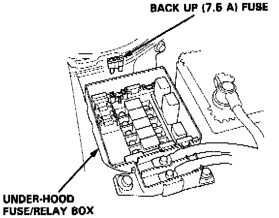

Clearing Trouble Codes

TRANSMISSION CONTROL MODULE (TCM) RESET PROCEDURE
1. Turn the ignition switch off.
2. Remove the No. 32 BACK UP fuse (7.5 A) from the under-hood fuse/relay box for 10 seconds to reset the TCM.
NOTE: Disconnecting the No. 32 BACK UP fuse also cancels the radio anti-theft code, preset stations and the clock setting. Get the customer's code number and make note of the radio presets before removing the fuse so you can reset them.
Final Procedure
NOTE: This procedure must be done after any troubleshooting.
1. Remove the special tool from the Service Check Connector.
2. Reset the TCM.
3. Set the radio preset stations and clock setting.